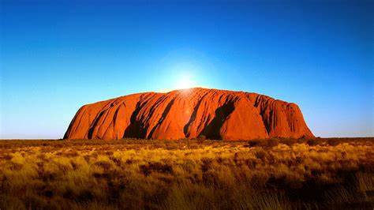
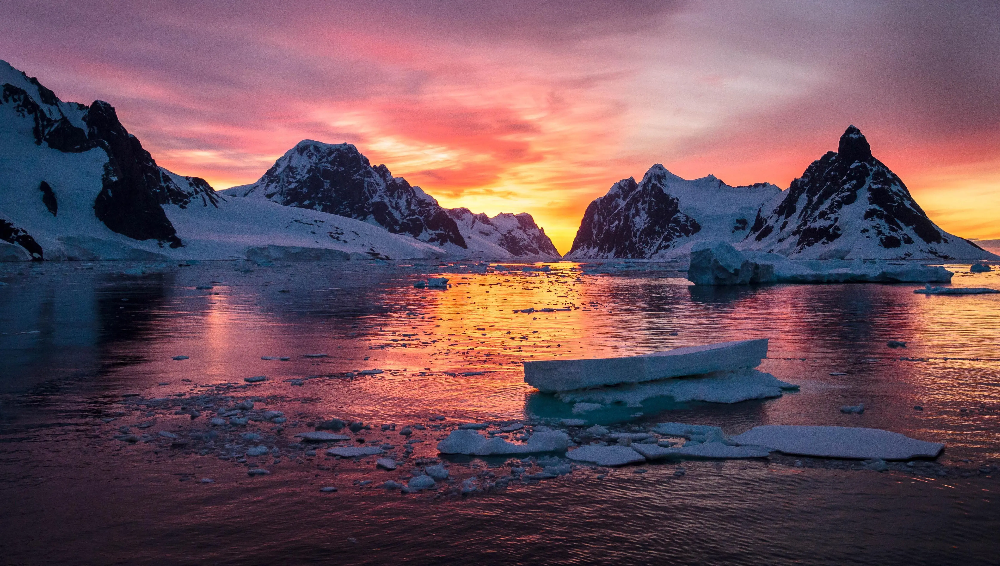
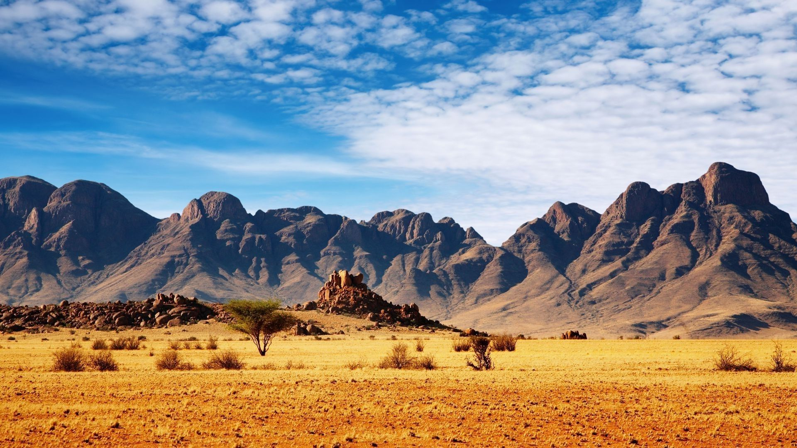
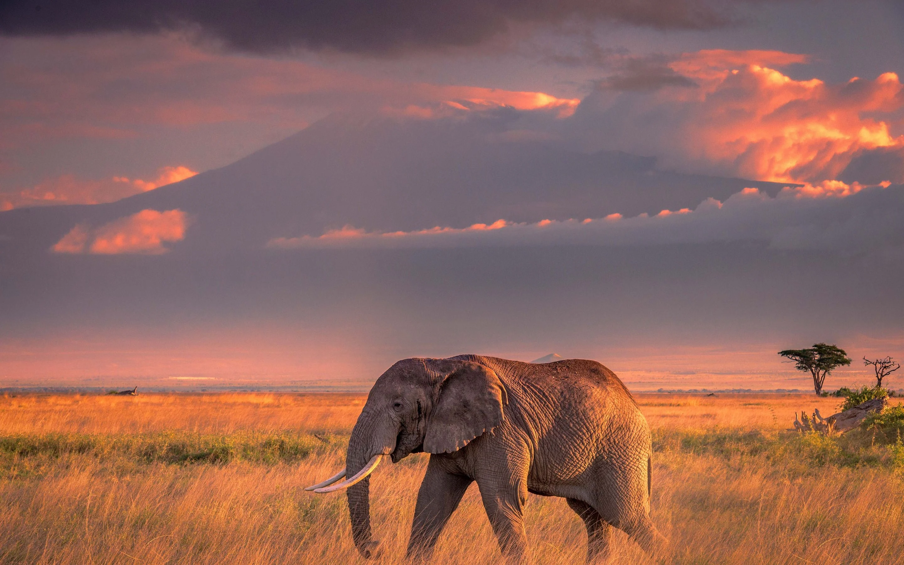

Home
AUSTRALIA
Geographical facts of Australia

Australia is a low-lying island with very little relief. It is the world’s flattest continent.
Australia’s interior deserts cover a vast chunk of the continent.
The two tallest monoliths in the world, Mt. Augustus and Uluru, are huge physical landmarks of interest and significance to Australia.
The Great Dividing Range, which runs along Australia’s eastern coast, is a generally flat continent with low-height hills.
Fun Facts about Australia
The name Australia comes from the Latin, ‘Terra Australia Incognito’, which means the Unknown Southern Land.
Australia is also known as ‘the sports capital’ of the world.
Australia has the sixth-lowest population density in the world—two people per square kilometer.
Australia Day, the national day of the country, is celebrated on 26th January every year.
The first cops in the country were all criminals.
Countries of Australia
New Zealand
Samoa
Tonga
Many More
*************************************************************************************************
ANTARCTICA
Geographical facts of Antarctica

Antarctica contains about 90% of the world's ice and about 70% of the world's fresh water.
With temperatures as low as -128°F, Antarctica is the coldest place on Earth.
Antarctica is a desert. It only gets about 2 inches of snow each year, and the snow there never melts.
Antarctica is the windiest continent on Earth, with wind speeds reaching 200 mph in some places.
Ice covers 99% of Antarctica.
Mount Erebus in Antarctica is the southernmost active volcano on the planet.
Fun Facts about Antarctica
There are no shrubs or trees on Antarctica.
The most abundant land animal on Antarctica is the nematode worm.
The first recorded child born in Antarctica was Emile Marco Palma in January 1979.
There are Victoria's Secret models from every continent except Antarctica.
Antarctica is so cold that water vapor in the air freezes and forms crystals, called diamond dust.
There are no countries in Antarctica.
*************************************************************************************************
AFRICA
Geographical facts of Africa

Africa is the world's hottest continent, and the world's second driest continent.
Africa is the world’s poorest and most underdeveloped continent.
Africa has over 25% of the world’s bird species.
Africa has 54 sovereign countries, the most of any continent.
Fun Facts about Africa

Sudan has 223 pyramids, more than Egypt.
More people in New York City have Internet connections than people in all of Africa.
Egypt is the most popular tourist destination in Africa, attracting around 10 million visitors per year.
Women and children in Africa walk an average of 3.7 miles daily to get water.
The African elephant is the world's largest land animal, weighing between 6 and 7 tons.
Countries of Africa
Nigeria
Egypt
Kenya
Uganda
Many More
To know more, click on
Africa
,
Australia
,
Antarctica
.